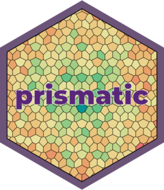

| prismatic-package {prismatic} | R Documentation |

Manipulate and visualize colors in a intuitive, low-dependency and functional way.
Maintainer: Emil Hvitfeldt emilhhvitfeldt@gmail.com (ORCID)
Useful links:
Report bugs at https://github.com/EmilHvitfeldt/prismatic/issues